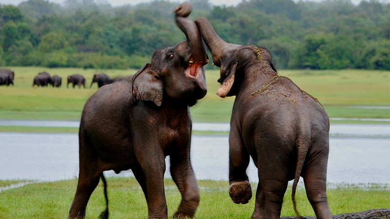
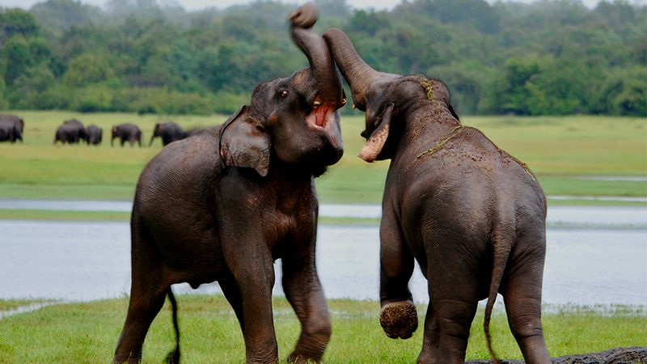

Wildlife Sri Lanka
Nestled in the heart of South Asia, Sri Lanka boasts a rich tapestry of biodiversity that unfolds across its diverse landscapes. From the lush rainforests of Sinharaja to the arid plains of Yala, this teardrop-shaped island harbors an incredible array of wildlife.
Wildlife Safari
Embark on a thrilling wildlife safari in Sri Lanka, where nature's drama unfolds in its untamed beauty.
Traverse the vast expanse of Yala National Park, home to the elusive leopard, and witness elephants gracefully meandering through Udawalawe's picturesque landscapes. Immerse yourself in the symphony of birdcalls at Bundala National Park, where flocks of vibrant winged wonders gather. Traverse Wilpattu National Park's dense foliage, capturing the regal presence of the Sri Lankan sloth bear.
Each safari unveils a different chapter of Sri Lanka's diverse ecosystems, providing a mesmerizing encounter with the untamed wilderness, making every moment a snapshot of the island's breathtaking natural heritage.

Wildlife Photography

 


Sri Lanka's biodiversity unfolds through the photographer's eye, each click preserving the essence of a vibrant, untamed paradise that echoes with the whispers of the wild.
In the heart of Sri Lanka's natural wonders, wildlife photography becomes a visual symphony. Embark on a captivating journey through lush landscapes and pristine habitats that house an extraordinary array of species. The lens captures the elegance of elephants in Udawalawe, the stealth of leopards in Yala, and the vibrant avian spectacle in Sinharaja's canopy. Witness the playful dance of toque macaques amid ancient ruins in Polonnaruwa, and the harmonious congregation of migratory birds in Bundala's wetlands.
Educational Resources
In Sri Lanka, a variety of educational resources contribute to fostering awareness and understanding of the country's diverse wildlife.
Wildlife sanctuaries, national parks, and conservation organizations, alongside online platforms and social media, collectively form a rich tapestry of educational outlets, nurturing a deeper appreciation for Sri Lanka's extraordinary biodiversity. Few resources are mentioned below.
- Wildlife Conservation in Sri Lanka,A History of Wildlife and Nature Protection Society of Sri Lanka, 1894-1994 By C. G. Uragoda · 1994
- Wild Sri Lanka (2nd Edition) By Gehan de Silva Wijeyeratne · 2019
- Birds of Sri Lanka By Deepal Warakagoda, Uditha Hettige, Himesha Warakagoda · 2022
- Mammals of Sri Lanka By Gehan de Silva Wijeyeratne · 2020
- Sri Lankan Wildlife By Gehan de Silva Wijeyeratne · 2022